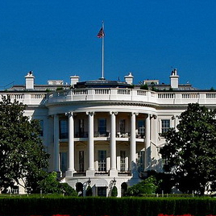
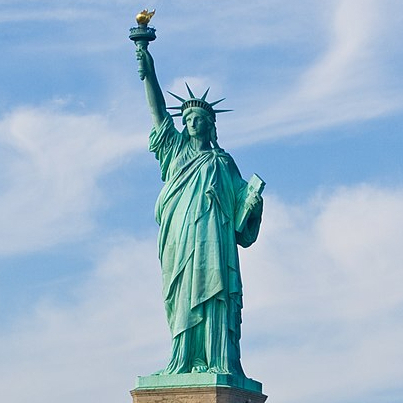

США
Извесные туристические места США
США
79,1 млн туристов ежегодно посещают США.Штаты настолько разнообразны по своей инфраструктуре, природе и особенностям жизни людей, что способны удивить и впечатлить даже бывалого туриста. Гавайи и Флорида принимают желающих предаваться солнечным ваннам или покорять морскую стихию, техасские деревушки напоминают о знакомом по фильмам Диком Западе, а Калифорния и Колорадо позволяют испытать себя на горных вершинах.
Извесные туристические места США
Статуя Свободы (г. Нью-Йорк),Центральный парк (г. Нью-Йорк, Манхэттен),Чайна-таун (г. Нью-Йорк, Манхэттен),Белый Дом (г. Вашингтон),Голливуд и Аллея звезд (г. Лос-Анджелес, штат Калифорния).
79,1 млн туристов ежегодно посещают США.Штаты настолько разнообразны по своей инфраструктуре, природе и особенностям жизни людей, что способны удивить и впечатлить даже бывалого туриста.
Гавайи и Флорида принимают желающих предаваться солнечным ваннам или покорять морскую стихию, техасские деревушки напоминают о знакомом по фильмам Диком Западе, а Калифорния и Колорадо позволяют испытать себя на горных вершинах.
Извесные туристические места США
Статуя Свободы (г. Нью-Йорк),Центральный парк (г. Нью-Йорк, Манхэттен),Чайна-таун (г. Нью-Йорк, Манхэттен),Белый Дом (г. Вашингтон),Голливуд и Аллея звезд (г. Лос-Анджелес, штат Калифорния).
79,1 млн туристов ежегодно посещают США.Штаты настолько разнообразны по своей инфраструктуре, природе и особенностям жизни людей, что способны удивить и впечатлить даже бывалого туриста. Гавайи и Флорида принимают желающих предаваться солнечным ваннам или покорять морскую стихию, техасские деревушки напоминают о знакомом по фильмам Диком Западе, а Калифорния и Колорадо позволяют испытать себя на горных вершинах.
Белый дом был официальной резиденцией всех президентов США, за исключением Джорджа Вашингтона, занимавшего эту должность с 1789 по 1797 год, так как при нём Белого дома ещё не существовало. На момент завершения строительства Белого дома, с субботы 1 ноября 1800 года, первым президентом, занимавшим дом, стал Джон Адамс. Дом президента в Филадельфии стал отелем и в 1832 году был разрушен, а президентский особняк, который не использовался, стал домом для университета штата Пенсильвании. В августе 1814 года Белый дом был сожжён британцами, после чего реконструирован и восстановлен.
Бе́лый дом (англ. the White House) — официальная резиденция президента США, расположенная в Вашингтоне (округ Колумбия) по почтовому адресу: Пенсильвания-авеню, 1600 (англ. 1600 Pennsylvania Avenue, Washington, D.C. 20500)
Ирландский архитектор Джеймс Хобан спроектировал резиденцию в неоклассическом стиле. С 1792 по 1800 год шло строительство. Использовался окрашенный в белый цвет песчаник Аквайя-крик. В 1801 году Томас Джефферсон переехал в дом. Чтобы скрыть конюшни и хранилища, он вместе с архитектором Бенджамином Генри Латроубом добавил низкие колоннады на каждом крыле.

79,1 млн туристов ежегодно посещают США.Штаты настолько разнообразны по своей инфраструктуре, природе и особенностям жизни людей, что способны удивить и впечатлить даже бывалого туриста. Гавайи и Флорида принимают желающих предаваться солнечным ваннам или покорять морскую стихию, техасские деревушки напоминают о знакомом по фильмам Диком Западе, а Калифорния и Колорадо позволяют испытать себя на горных вершинах.

Ста́туя Свобо́ды (англ. Statue of Liberty, полное название — «Свобо́да, озаря́ющая мир», англ. Liberty Enlightening the World) — колоссальная скульптура в стиле Наполеона III, или стиле Второй империи, расположенная в США на острове Свободы, находящемся в Верхней Нью-Йоркской бухте примерно в 3 километрах к юго-западу от южной оконечности острова Манхэттен. Была сооружена как подарок США от Франции ко Всемирной выставке 1876 года и столетию американской независимости (на выставке был показан только факел статуи). Завершённую статую США получили только в 1886 году.
Статуя Свободы — второй по высоте маяк страны (после Мемориала Победы Перри и мира во всём мире, высота которого составляет 107 м), однако она выполняет световую навигационную роль для морских судов как свою вторичную функцию, поэтому в списки маяков страны её не включают.